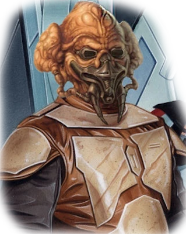

«Вы, Баран-до, действительно даёте очень точные по смыслу обозначения».
«Наши ощущения склоняются к осязательной и визуальной чувствительности, а не к словесной. Для нас, изучающих Основной, всегда является ритуалом открытие новых красочных прилагательных и захватывающее множество синонимов».
*Люк Скайуокер и Тила Монг*
Кел-доры — разумная раса с планеты Дорин. Чтобы выжить в богатой кислородом среде они были вынуждены носить специальные дыхательные маски, закрывавшие глаза и ноздри.
Имена Кел-доров Особенности Кел-доровКел-доры были расой, типичный рост и вес которых был схож с человеческим. Цвет их кожи варьировался от персикового до малиново-красного. Большинство имели чёрные глаза, хотя некоторые рождались с серебристыми зрачками, что часто воспринималось как чувствительность к Силе.
Кел-доры в целом считались непривлекательным видом в связи с их странной лицевой структурой. Их носы описывали как слишком короткие, чтобы быть клювом, с зияющими отверстиями до рта. А рот, в свою очередь, как беззубую пропасть с висячими мясистыми нитями. Вместо зубов у кел-доров было лишь верхнее и нижнее твёрдое небо, которые были видны только когда они вытягивали губы назад. Обрамлением головы служили экстрасенсорные органы, которые переходили в маленькие черные бивни.
Из-за уникальной для своего мира атмосферы планеты Дорин, состоявшей из гелия и газа, кел-доры были вынуждены были носить противокислородные дыхательные маски и защитные очки, когда атмосфера имела иной состав. Это оборудование защищало их от углекислого газа, азота и кислорода, которые были смертельны для кел-доров. Дыхательная маска также помогала усилить голос владельца, так как без неё они вынуждены были кричать, чтобы произвести хоть какой-то звук.
Без своих защитных очков за пределами Дорина кел-доры становились фактически слепыми. Они также были в состоянии выжить в космическом вакууме в течении короткого времени, хотя как долго они могли это вынести, в точности неизвестно.
Кел-Дор может видеть в два раза дальше обычного человека в условиях слабого освещения.
Также кел-доры в результате работы экстрасенсорных органов в голове имели повышенные рефлексы. Как биологический вид они считались умными существами, но по сравнению с другими расами у кел-доров была более слабая конституция.
Кел-доры также могли общаться между собой посредством одной из форм телепатии. Эта форма телепатии рассматривалась как техника Силы, практикуемая только среди мастеров ордена Баран-До, но позже подвергнута сомнению мудрецами Баран-До.
Кел-доры знали о существовании Силы и пользовались ею задолго до присоединения к Галактической Республике и Ордену джедаев. Эта славная традиция известна как Мудрость Баран-До. Мудрецы Баран-До часто выступали в качестве советников в богатых кел-дорских семьях. Первоначально их способности были ориентированы на предсказание погоды. Но как только Мудрецы Баран-До узнали больше о Силе, они осознали, что были способны на обнаружение, а затем предупреждения опасных событий. Войны и катастрофы зачастую предотвращались благодаря проницательности Мудрецов Баран-До. После присоединения к Республике сократилась как численность Мудрецов Баран-До, так и их могущество в связи с превосходящими познаниями джедаев в областях Силы, а также из-за принятия чувствительных к Силе детей в ряды Ордена. Нередко кел-доры целенаправленно готовили их на пути эксцентричных мастеров. Некоторые семьи традиционалистов по-прежнему предпочитали для чувствительных к Силе детей учения Мудрецов пути Ордена. Благодаря своей изолированности Мудрецам удалось по большей части невредимыми избежать Великого истребления джедаев.
Кел-доры отмечались простым подходом к правосудию. Они часто видели моральные проблемы в чёрном и белом цвете. С одной стороны, кел-коры славились гостеприимством, никогда не отворачиваясь от нуждающегося в них путника; с другой стороны, кел-доры никогда не были прочь взять закон в свои руки, без каких-либо угрызений совести лишали жизни вора за простую кражу ради пропитания.
Кел-дорские фамилии, подобно человеческим фамилиям, происходили от рода деятельности предков, или даже от описания особо известных членов кел-дорских семей. Фамилия Кун, к примеру, означала «Исследователь». Кел-дор имена были основаны, преимущественно, на звуках, порождаемых уникальными атмосферными явлениями Дорина. Эта традиция была весьма популярна среди кел-доров, и высшие классы считали невезением назвать ребёнка вдали от Дорина. Кел-дор имена, как правило. короткие, односложные, из-за древних суеверий о «духах ветра» на Дорине. По звучанию звук устойчивого ветра сопоставим с длинным именем, поэтому пошёл слух, что духи ветров ошибочно приняли ребёнка за одного из своих, и выносили его или её, чтобы возвысить как дитя ветра. Никто не верил в этот миф на протяжении тысячи лет, однако его влияние на имена кел-доров осталось.
Традиция использования звуков атмосферных явлений означала, что кел-доры давали имена, почти не имеющие смысла для чужака, но другие кел-доры, услышав звук, могли понять значение и смысл услышанного имени. Кроме того, объекты или методы часто называли в честь их цели или эффекта. К примеру, в Баран-До техника Силы «айна-сефф», которая скрывала мозговую активность, на основной галактический язык переводилась как «мёртвый мозг».
К примерам типичных угнотских имен можно отнести: Торин Дол, Йит Ганар, Пло Кун, Ша Кун, Долн Ток, Ност-Дюрал, Коро Зиил, Тила Монг, Тол Брага
Ваш персонаж-кел-дор обладает следующими особенностями, общими для всех кел-доров.
Увеличение характеристик. Значения вашей Мудрости увеличивается на 2, а Ловкости увеличивается на 1.
Мировоззрение. Любое.
Размер. Рост кел-доров колеблется от 1,5 метров до 2.
Скорость. Ваша базовая скорость ходьбы составляет 30 футов.
Повышенные рефлексы. Вы владеете навыком акробатика.
Атмосферные требования. Кел-доры должны носить специальную маску, чтобы дышать и видеть за пределами своей родной атмосферы. Персонаж Кел-дор начинает игру с антитоксической дыхательной маской и считает кислород опасной атмосферой. Однако Кел-доры могут выживать в вакууме до пяти минут, прежде чем пострадают от его последствий.
Темное зрение. Благодаря вашей кел-дорской крови, вы обладаете превосходным зрением в темноте и при тусклом освещении. На расстоянии в 60 футов вы при тусклом освещении можете видеть так, как будто это яркое освещение, и в темноте так, как будто это тусклое освещение. В темноте вы не можете различать цвета, только оттенки серого.
Языки. Вы можете говорить, читать и писать Общем и Кел-дорском языках.